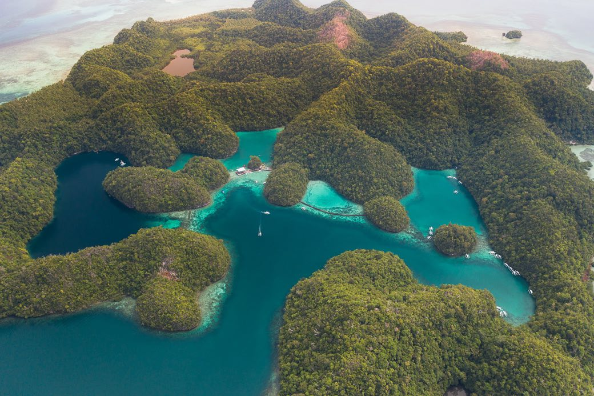

Siargao
Siargao is an island of nine municipalities in the province of Surigao del Norte. Known as the “Surfing Capital of the Philippines”, Siargao is mainly responsible for introducing surfing to the country. Apart from surfing, Siargao is also open to other activities such as cave explorations and rock climbing.
Mount Apo
Mount Apo, also known locally as Apo Sandawa, is a large solfataric, dormant stratovolcano on the island of Mindanao, Philippines. With an elevation of 2,954 meters (9,692 ft) above sea level, it is the highest-mountain in the Philippine Archipelago, Mindanao and 24th-highest peak of an island on Earth. Located between Davao City and Davao del Sur in the Davao Region, and Cotabato in Soccsksargen, Mount Apo is the most-prominent mountain in the Philippines. The peak overlooks from Davao City 45 kilometers (28 mi) to the northeast, Digos 25 kilometers (16 mi) to the southeast, and Kidapawan 20 kilometers (12 mi) to the west. It is a protected area and a Natural Park of the Philippines.